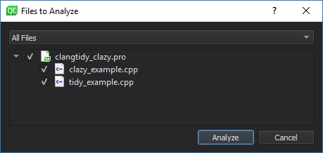
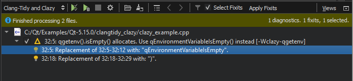
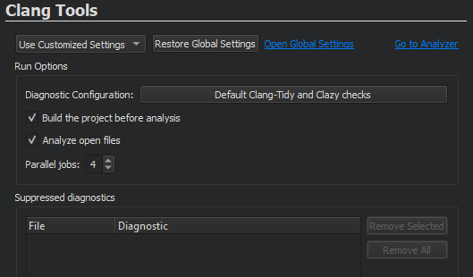
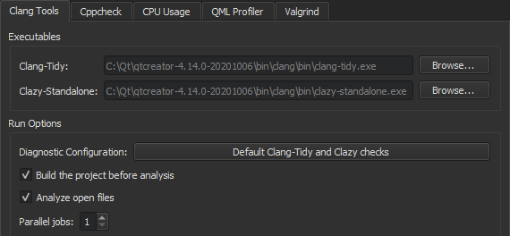
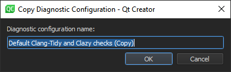
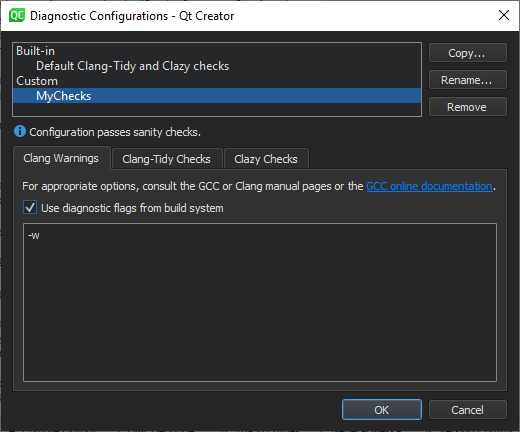
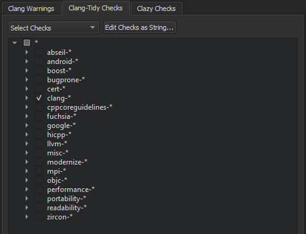
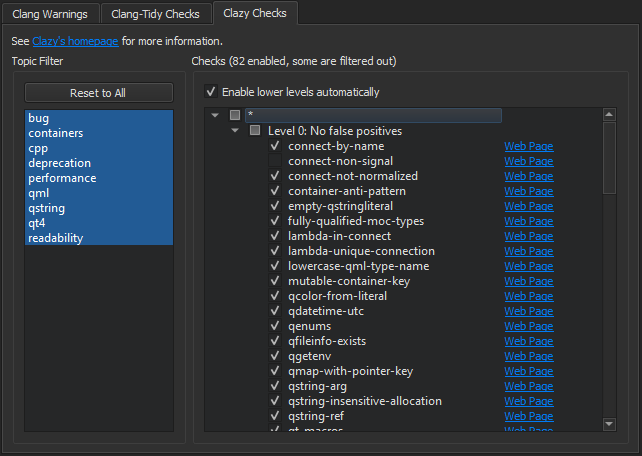

Using Clang Tools
Qt Creator integrates the following Clang tools for finding problems in C, C++, and Objective-C source code by using static analysis:
- Clang-Tidy, which provides diagnostics and fixes for typical programming errors, such as style violations or interface misuse.
- Clazy, which helps Clang understand Qt semantics. It displays Qt related compiler warnings, ranging from unnecessary memory allocation to misuse of API and provides refactoring actions for fixing some of the issues.
Note: The Clang static analyzer checks are a part of Clang-Tidy. To use the checks you must create a custom configuration for the Clang tools and enable them for Clang-Tidy.
Clang tools are delivered and installed with Qt Creator, and therefore you do not need to set them up separately.
In addition to running the tools to collect diagnostics, you can select to load diagnostics from YAML files that you exported using the -export fixes option.
Running Clang Tools
To run the Clang tools to analyze the currently open file:
- Select the
 (Analyze File) button on the editor toolbar.
(Analyze File) button on the editor toolbar. - Select Tools > C++ > Analyze Current File.
To run the Clang tools to analyze an open project:
- Select Analyze > Clang-Tidy and Clazy.

- Select the files to apply the checks to.
- Select Analyze to start the checks.
The found issues are displayed in the Clang-Tidy and Clazy view:

Note: If you select Debug in the mode selector to open the Debug mode and then select Clang-Tidy and Clazy, you must select the (Start) button to open the Files to Analyze dialog.
Double-click an issue to move to the location where the issue appears in the code editor.
If a fixit exists for an issue, you can select the check box next to the issue to schedule it for fixing. Select the Select Fixits check box to select all fixits. You can see the status of an issue by hovering the mouse pointer over the icon next to the check box.
To see more information about an issue that is marked with the  icon, hover the mouse pointer over the line.
icon, hover the mouse pointer over the line.
You can disable particular type of checks either globally or for a particular project by selecting Disable This Check or Disable These Checks in the context menu.
Select the  button to customize Clang diagnostics for the current project.
button to customize Clang diagnostics for the current project.

To restore the global settings, select Restore Global Settings. To view and modify the global settings, select Open Global Settings. To open the Clang static analyzer, select Go to Analyzer.
Configuring Clang Tools
To configure Clang diagnostics globally for Clang tools:
- Select Tools > Options > Analyzer > Clang Tools.

- In the Clang-Tidy and Clazy-Standalone fields, set the paths to the executables to use.
- To build the project before running the Clang tools, select the Build the project before analysis check box. The Clang tools do not require the project to be built before analysis, but they might display misleading warnings about files missing that are generated during the build. For big projects, not building the project might save some time.
- To disable automatic analysis of open documents, deselect the Analyze open files check box.
- In the Parallel jobs field, select the number of jobs to run in parallel to make the analysis faster on multi-core processors.
- In the Diagnostic Configuration group, select Manage to create or edit a custom configuration.
- Select Copy to create a custom Clang configuration.

- In the Diagnostic configuration name field, give the configuration a name, and then select OK.
- In the Clang Warnings tab, select the Use diagnostic flags from the build system check box to forward diagnostic flags, such as warning flags, from the build system to the Clang code model for displaying annotations in the code editor.

- In the Clang-Tidy Checks tab, select Select Checks to select the checks to perform.

For more information about the available checkers, see Clang Static Analyzer documentation.
- To edit the selected check as plain text, select Edit Checks as String.
- In the Clazy Checks tab, select the level of Clazy checks to perform.

- In the Topic Filter field, select a topic to view only checks related to that area in the Checks field.
- To view all checks again, select Reset Filter.
- To view more information about the checks online, select the Web Page links next to them.
To suppress diagnostics, select Suppress This Diagnostic in the context menu. To view the suppression list for a project and to remove diagnostics from it, select Projects > Project Settings > Clang Tools.
Selecting Clazy Check Levels
The Clazy checks are divided into levels from 0 to 3. The checks at level 0 are very stable and provide hardly any false positives, while the checks at level 3 can be considered experimental. You can select the checks to perform at each level. To include the checks from the lower levels automatically, select the Enable lower levels automatically check box.
Creating Clang-Tidy Configuration Files
Clang-Tidy reads the configuration for each source file from a .clang-tidy file located in the closest parent directory of the source file. If any configuration options have a corresponding command-line option, the command-line option takes precedence. The effective configuration can be inspected using -dump-config.
Qt Creator creates the configuration for you based on the checks you select. To store the checks in file format, you can create a .clang-tidy file, as follows:
- Select Edit Checks as String and copy the contents of the field.
- Pipe the output of
clang-tidy -dump-configinto a file named.clang-tidy. For example:clang-tidy -checks=-*,bugprone-*,cppcoreguidelines-avoid-* -dump-config > .clang-tidy - Move the .clang-tidy file to the parent directory of the sources.
To add more checks using Qt Creator later on, copy the checks from your .clang-tidy file into the Edit Checks as String field, select additional checks, and copy-paste the contents of the field to the .clang-tidy file.